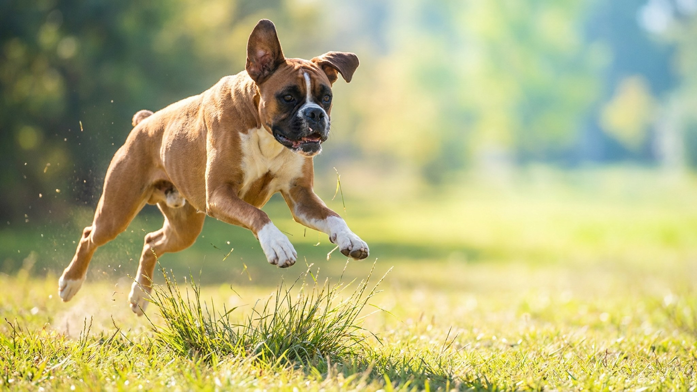

Боксёр: характер, энергия и жизнь с этой породой дома

7 июля 2026 · ≈3 минуты чтения · Породы
Боксёр прыгает на хозяина при встрече даже в три года — и это не дефект воспитания, а порода. За мускулистым корпусом скрывается собака с детской жаждой контакта, которой нужна не просто прогулка, а взаимодействие. Если вы готовы к этому — получите преданного, весёлого и бесконечно теплого партнёра. Ниже — что реально важно знать до того, как боксёр появится дома.
🐾 Всё о вашем питомце — в одном приложении
AI-ветеринар, дневник, напоминания о прививках и уходе. Установите AnimaLife — это бесплатно, в Telegram и MAX.
Открыть в Telegram → Открыть в MAX →
Темперамент: много энергии, много контакта
Боксёр — рабочая порода с высоким уровнем возбудимости. Он не спокойный наблюдатель, а активный участник всего, что происходит в доме. Это собака, которая ходит за хозяином, кладёт голову на колени, комментирует происходящее взглядом и позой. Изоляция и долгое одиночество — главный источник разрушительного поведения у этой породы.
- «Вечный щенок» до 2–3 лет. Зрелость у боксёров наступает позже, чем у большинства пород. Первые два года — бурный, порывистый, плохо тормозящий.
- Уравновешенность приходит. После 3 лет боксёр становится заметно спокойнее, сохраняя игривость и привязанность.
- Интеллект высокий, скука опасна. Без задачи боксёр придумает задачу сам — и не всегда вам понравится результат.
Нагрузка: сколько и какая
Боксёр — не та порода, которой хватит двух коротких выгулов. Ему нужны движение и умственная работа ежедневно. Минимум — два выгула по 40–50 минут плюс активное взаимодействие.
- Физическая нагрузка: бег, апортировка, плавание, игры с хозяином. Монотонные прогулки «по кругу» не закрывают потребность.
- Ментальная нагрузка: поисковые игры, нюхательные коврики, команды с усложнением — боксёр хорошо обучается и любит задачи.
- Жара — ограничение. Боксёр брахицефал: короткая мордочка затрудняет дыхание в зной. Активные прогулки — утром и вечером, в жаркий день сокращайте нагрузку и следите за дыханием.
- Холод переносит умеренно. Короткая шерсть без подшёрстка не держит тепло. В мороз нужна попона, долгие прогулки на сильном морозе — нежелательны.
Дети, семья, социализация
Боксёр — одна из лучших пород для семьи с детьми. Он терпелив, игривый и искренне привязывается к детям. Единственный нюанс: молодой боксёр может случайно сбить с ног ребёнка просто от избытка радости — за этим нужно следить.
- Социализация с раннего возраста критична. Щенка важно знакомить с разными людьми, звуками, ситуациями до 16 недель — это формирует устойчивую психику.
- С другими животными — зависит от воспитания. При грамотном знакомстве живут мирно. Доминирование возможно, но корректируется.
- Незнакомцы — настороженность без агрессии. Боксёр не трус, но и не бросается на всех подряд. Хорошо воспитанный умеет переключаться по команде хозяина.
🐾 Спросите AI-ветеринара прямо сейчас
AnimaLife — приложение, где AI-ветеринар отвечает на вопросы о кошке или собаке 24/7. Бесплатно, без записи и очередей.
Открыть в Telegram → Открыть в MAX →
🐾 Понравился разбор?
Подпишитесь на канал — каждый день разбираем по одному тревожному симптому у кошек и собак: что в пределах нормы, а когда пора к врачу. Подпишитесь, чтобы не пропустить разбор, который может спасти здоровье вашего питомца.
Воспитание: что работает, а что нет
Боксёр умный и обучаемый, но не послушный по умолчанию. Ему нужны последовательность, чёткие правила и положительное подкрепление — жёсткость и давление дают обратный эффект.
- Занятия с раннего возраста. Базовые команды — с 8–10 недель. Чем раньше боксёр понимает правила, тем легче с ним в будущем.
- Хозяин должен быть интересен. Боксёр работает ради контакта с человеком — используйте это. Холодность и безразличие — плохая мотивация для этой породы.
- Не задерживайте управляемость. Невоспитанный молодой боксёр с его энергией — испытание для семьи. Инвестиция в обучение на старте окупается в разы.
Материал носит информационный характер и не заменяет очную консультацию ветеринара.
← Все статьи · Открыть AnimaLife в Telegram · RSS